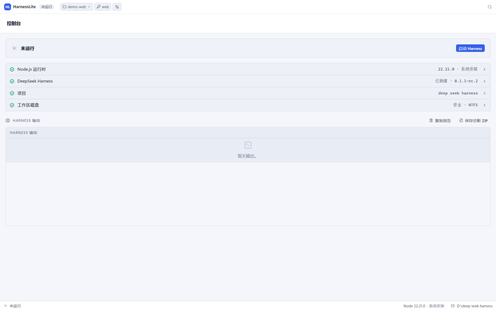
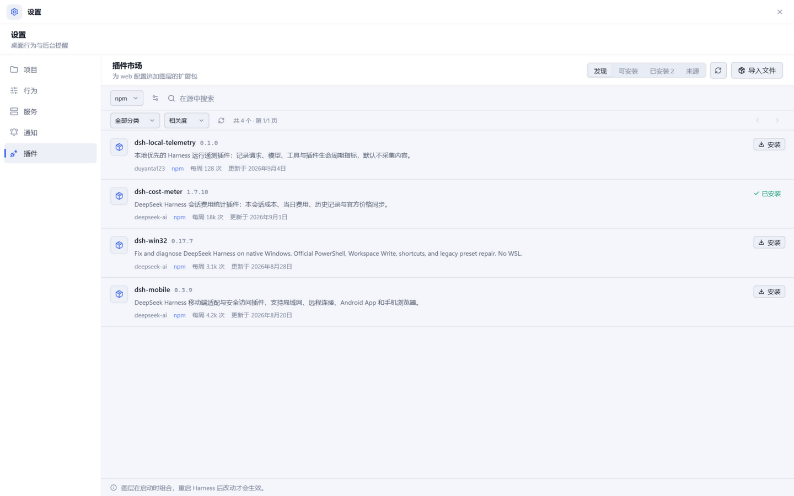
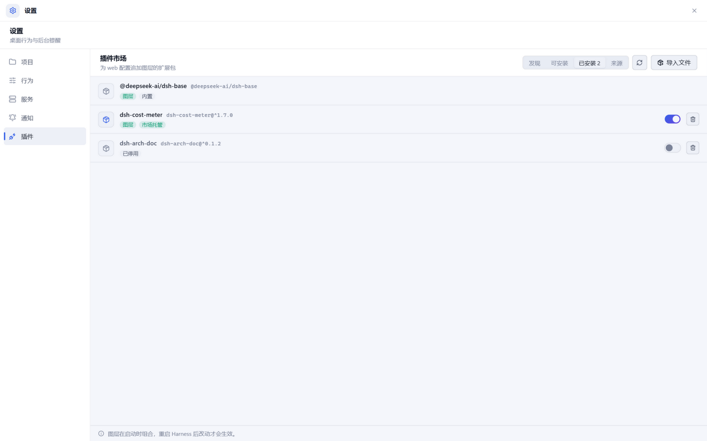
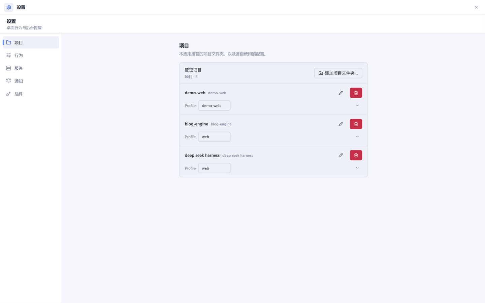
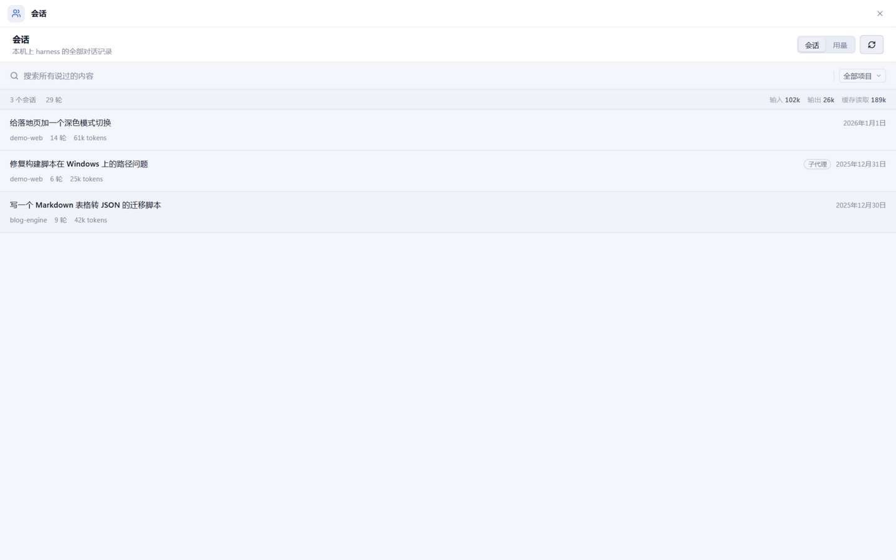
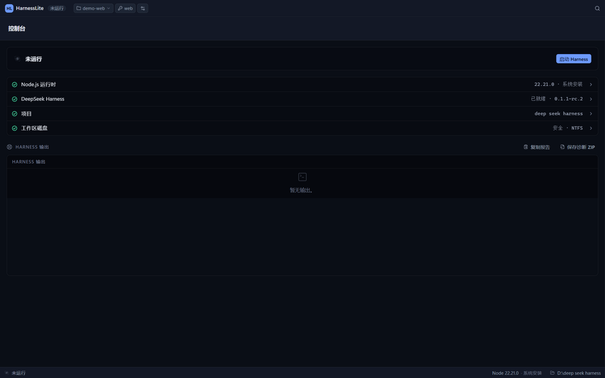

DeepSeek Harness 的 Windows 原生桌面壳 —— 双击启动，开箱即用
The native Windows desktop shell for the DeepSeek Harness. One double-click and it runs.
Windows 10/11 x64 · v0.1.3 · 免费 · 开源（MIT）

DeepSeek Harness 本身是一个命令行工具 + 网页界面。HarnessLite 把它装进一个真正的桌面应用： 不用打开终端、不用记命令、不用配 Node 环境——安装后双击，运行时自动就位，聊天界面直接出现在桌面上。 中文界面，对新手友好。
自动下载 Node 与官方 Harness 运行时，零命令行，崩溃自动恢复。
一个文件夹一个项目，各自绑定独立配置，切换即重启。
直连 npm 的插件市场，搜索、一键安装、按需停用，安装前安全预检。
全部历史对话可搜索、可导出，自带 Token 用量与费用统计。
局域网内扫码配对，手机上继续和 Harness 干活，凭据按设备吊销。
多标签真终端，dsh / git / npm 环境开箱即配。
点击上方「下载 Windows 安装包」，运行 exe。若 SmartScreen 弹出提示：点「更多信息 → 仍要运行」（应用未做代码签名，属正常提示）。
首次启动会自动联网下载 Node 运行时并安装官方 Harness（几分钟，只需一次）。环境检查全绿即就绪。
聊天界面出现在窗口中。想加插件？设置 → 插件；想在手机上用？Ctrl+K 搜「远程」。





运行时从 nodejs.org 与 npm 官方源下载，国内网络较慢属正常，耐心等待即可；若网络受限，可在启动前为本机代理设置系统环境变量 HTTP_PROXY / HTTPS_PROXY（指向你自己的代理地址与端口），应用会遵循它们。
安装包未做付费代码签名。点「更多信息」→「仍要运行」即可；应用完全开源，可自行审阅或从源码构建。
dsh web 有什么区别？没有区别的部分：聊天界面就是官方 web UI，协议、数据、会话完全兼容。多出来的部分：运行时托管与崩溃恢复、项目管理、插件市场、终端、会话库、手机访问、托盘常驻——以及不用碰命令行。
不是。HarnessLite 是独立的社区开源项目（MIT），与 DeepSeek 无隶属关系；它托管的是官方 @deepseek-ai/dsh 运行时。